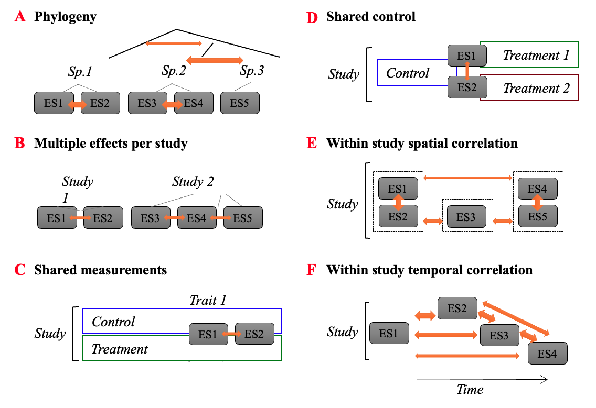

Complex Non-independence in Meta-analysis
Introduction
We have already introduced the power of multilevel meta-analytic models for dealing with non-independence, such as shared species, phylogeny and study (Hadfield and Nakagawa, 2009; Nakagawa and Santos, 2012; Noble et al., 2017), but meta-analyses often contain even more complex forms on non-independence.
We might have many effect size estimates from a single study because many traits are measured on the same sample of organisms, or many treatments are applied and we can create an effect size with some common control (Noble et al., 2017). This adds complexity to the data set and also results in special types of non-independence that are somewhat unique to meta-analysis – especially when using contrast-based effect sizes like Hedges’ g, log response ratios, log odds ratios etc (Noble et al., 2017).
In this tutorial, we’ll overview some of these unique forms of non-independence discussing some of the ways that they can be dealt with using different approaches. Often there are no simple solutions because information collected to derive effect sizes are often lacking important details that would allow some forms of dependence to be dealt with. Thankfully, these problems have been thought about for some time by many meta-analysts and there are solutions that work reasonably well (Gleser and Olkin, 2009; Hedges, 2019; Hedges et al., 2010; Lajeunesse, 2011; Pustejovsky and Tipton, 2021; Tipton, 2013).
The Many Forms of Dependence in Meta-analysis
Let’s briefly overview why non-independence can be an issue and why simple multilevel meta-analytic models do not always deal with the problem sufficiently well. Recall our multi-level meta-analytic (MLMA) model from the last tutorial.
\[ y_{i} = \mu + s_{j[i]} + spp_{k[i]} + e_{i} + m_{i} \\ m_{i} \sim N(0, v_{i}) \\ s_{j} \sim N(0, \tau^2) \\ spp_{k} \sim N(0, \sigma_{k}^2) \\ e_{i} \sim N(0, \sigma_{e}^2) \]
We hid some important notation to avoid drawing attention to it initially. The notation we neglected to mention is now included below:
\[ \\ m_{i} \sim N(0, v_{i}\textbf{I}) \\ s_{j} \sim N(0, \tau^2\textbf{I}) \\ spp_{k} \sim N(0, \sigma_{k}^2\textbf{I}) \\ e_{i} \sim N(0, \sigma_{e}^2\textbf{I}) \] You’ll notice that we added in \(\bf{I}\), but what is \(\bf{I}\)? \(\bf{I}\) is called the identity matrix. It is a matrix that has rows and columns equal to the number of effect size values (if at the effect level) or the number of species or studies (if at the study or species-level) in the data set. The identity matrix contains 1’s on the diagonal and 0’s in the off-diagonals. For a data set with 3 effect size estimates the identity matrix looks like this:
\[ \bf{I} = \begin{bmatrix} 1 & 0 & 0 \\ 0 & 1 & 0 \\ 0 & 0 & 1 \end{bmatrix} \]
Thinking about matrices and variances!
What is the significance of multiplying the \(\bf{I}\) matrix by the variance for each random effect above?
The short story is that we are making the assumption that each random effect added to a given effect size is drawn from an independent and identical distribution. To see why this is the case think about what happens when we multiply \(\sigma_{i}^2\) by this matrix. Along the diagonal, we get the exact same variance estimate for every single effect size (or for effect sizes that share a cluster). This tells us that they are sampled from a distribution that has the same mean (0) and variance (\(\sigma_{i}^2\)) (i.e., are sampled from the same distribution).
If, however, we multiply the off-diagonals by the variance we get zero. The fact that these off-diagonals are 0 tells us straight away that all the random effects being sampled are independent from one another as otherwise the off-diagonals would be non-zero (i.e., would have a co-variance) (and the correlation matrix would have a correlation above 0). This seems sensible. All effect size estimates from the same study will have the same ‘effect’ added to the estimate. This indicates that these effects should be more similar to each other by virtue of them being from the same study (Figure 9.1 b from Noble et al. (2017)). This does, in some sense, deal with non-independence, but not completely!
Complex Forms of Non-Independence
Our assumption about effects from the same study being independent would likely be wrong if, for example, we have effect sizes that are measured on different traits of the same animals that vary in their relationship with each other (i.e., some traits are more strongly correlated than others). Alternatively, if our effect size statistics were collected at different times or spatial locations that vary in the extent to which they are correlated with each other. In fact, species themselves vary to different degrees based on how long ago they shared a common ancestor. This is why we include evolutionary relationships among species in our meta-analytic models! (we’ll discuss this in the phylogeny tutorial (Chamberlain et al., 2012; Hadfield and Nakagawa, 2009; Nakagawa and Santos, 2012) (Figure 9.1 a from Noble et al. (2017)). In these cases, we need to properly model the correlation among effect size values induced by these processes.
But, wait, there’s more. In fact, things can get very complicated, as outlined by Noble et al. (2017)! (See Figure 9.1). If we have used the same data to calculate multiple effect size values then we are also inducing a correlation among their sampling errors (Gleser and Olkin, 2009; Hedges, 2019; Lajeunesse, 2011; Noble et al., 2017). That could be a serious problem because the inverse sampling errors are what we are using as weights in our analysis. If there are correlations among sampling errors then we need to account for this in our sampling variance matrix. We can do this but also modifying out sampling error matrix
\[ m_{i} \sim N(0, \textbf{M}) \]
The new sampling variance matrix, \(\textbf{M}\), now has the sampling variances along the diagonal, which we know because we can calculate these. But, how do we now know what the covariance between the sampling errors are to be put in the off-diagonals of this \(\textbf{M}\) matrix? Luckily there are some approximations for us that we can use to construct the entire \(\textbf{M}\) sampling (co)variance matrix (Gleser and Olkin, 2009; Hedges, 2019; Lajeunesse, 2011).
Why do we want to control for non-independence?
You might be thinking, so what? Yes, we have all these sources of non-independence, but who cares? Why is it important that we seriously consider the dependency? There are a few reasons:
- First, we want to make sure we get the ‘weight’ matrix correct so that we get a good estimate of the overall meta-analytic mean
- Second, ignoring the dependency structure will result in much narrower confidence intervals giving us a false impression that we have much greater confidence in the mean estimate than what we actually have.
- Third, and this relates to point 2 above, it will mess up with our inferential statistics. We are more likely to make Type I errors. Narrower standard errors are going to result in larger test statistics and this in combination with our over-inflated degrees of freedom will tell us our results are significant when in fact they are not.
Robust Variance Estimation – a useful tool to deal with unknown dependency
Sometimes we may not be able to deal with all sources of dependency. There are a lot of unknowns with respect to how effect sizes might be correlated, to what extent they are related and it might vary across studies. A very promising tool are robust variance estimators which relax the need to known and understand the dependency in your data. James Pustejovsky provides a fantastic overview of the problem and how robust variance estimators can help make it easier to deal with various sources of non-independence.
We can apply robust variance methods to our model above using the robust function in metafor. It’s reasonably simple.
Code
robust(mlma, cluster = mass_data$paper_no)
Multivariate Meta-Analysis Model (k = 50; method: REML)
Variance Components:
estim sqrt nlvls fixed factor
sigma^2.1 0.0000 0.0000 19 no paper_no
sigma^2.2 0.0029 0.0540 16 no Genus_species
sigma^2.3 0.0022 0.0465 50 no data_ID
Test for Heterogeneity:
Q(df = 49) = 954.2505, p-val < .0001
Number of estimates: 50
Number of clusters: 19
Estimates per cluster: 1-6 (mean: 2.63, median: 2)
Model Results:
estimate se¹ tval¹ df¹ pval¹ ci.lb¹ ci.ub¹
-0.0151 0.0169 -0.8950 18 0.3826 -0.0505 0.0203
---
Signif. codes: 0 '***' 0.001 '**' 0.01 '*' 0.05 '.' 0.1 ' ' 1
1) results based on cluster-robust inference (var-cov estimator: CR1,
approx t-test and confidence interval, df: residual method)As we can see here, there are really no changes, which isn’t too surprising because we have mostly accounted for all the sources of dependence. In simulations, we and others have shown RVE’s do a very good job dealing with dependency (Nakagawa et al., 2022; Pustejovsky and Tipton, 2021; Song et al., 2021; Tipton, 2013) .
Conclusions
There are a tonne of different sources of non-independence you might encounter in meta-analysis – some of these are somewhat unique (Noble et al., 2017). In the next tutorial we’ll talk about another common source – phylogeny. Unfortunately, we don’t have time (or enough examples) to overview the different types and how to deal with them all. In some cases, it may not really matter whether all sources are correctly dealt with in the model, and it can get quite complex such that it may not be possible to deal with them all anyway.
Having said that, Noble et al. (2017) recommend:
- reporting on the different sources of non-independence explicitly
- conducting sensitivity analyses to explore the impacts of non-independence on inferences.
The use of robust variance estimators shows immense promise in dealing with a multitude of dependency within a data set without having to specify it all explicitly (Hedges, 2019; Hedges et al., 2010; Nakagawa et al., 2022; Pustejovsky and Tipton, 2021; Song et al., 2021; Tipton, 2013).
References
Chamberlain, S. A., Hovick, S. M., Dibble, C. J., Rasmussen, N. L., Van Allen, B. G. and Maitner, B. S. (2012). Does phylogeny matter? Assessing the impact of phylogenetic information in ecological meta-analysis. Ecology Letters 15, 627–636.
Gleser, L. J. and Olkin, I. (2009). Stochastically dependent effect sizes. In: The Handbook of Research Synthesis and Meta-analysis (eds Cooper H, Hedges LV, Valentine JC). Russell Sage Foundation, New York. pp 357–376.
Hadfield, J. D. and Nakagawa, S. (2009). General quantitative genetic methods for comparative biology: Phylogenies, taxonomies and multi-trait models for continuous and categorical characters. Journal of Evolutionary Biology 23, 494–508.
Hedges, L. V. (2019). Stochastically dependent effect sizes. In: The Handbook of Research Synthesis and Meta-analysis (eds Cooper H, Hedges LV, Valentine JC). Russell Sage Foundation, New York. pp. 281–297.
Hedges, L. V., Tipton, E. and Johnson, M. C. (2010). Robust variance estimation in meta-regression with dependent effect size estimates. Research Synthesis Methods 2010, 39–65.
Lajeunesse, M. J. (2011). On the meta-analysis of response ratios for studies with correlated and multi-group designs. Ecology 92, 2049–2055.
Nakagawa, S. and Santos, E. S. (2012). Methodological issues and advances in biological meta-analysis. Evolutionary Ecology 26, 1253–1274.
Nakagawa, S., Senior, A. M., Viechtbauer, W. and Noble, D. W. A. (2022). An assessment of statistical methods for non-independent data in ecological meta-analyses: comment. Ecology 103, e03490, https://doi.org/10.1002/ecy.3490.
Noble, D. W. A., Lagisz, M., O’Dea, R. E. and Nakagawa, S. (2017). Non‐independence and sensitivity analyses in ecological and evolutionary meta‐analyses. Molecular Ecology 26, 2410–2425.
Pustejovsky, J. E. and Tipton, E. (2021). Meta‐analysis with robust variance estimation: Expanding the range of working models. Prevention Science in press.,.
Raynal, R. S., Noble, D. W. A., Riley, J. L., Senior, A. M., Warner, D. A., While, G. M. and Schwanz, L. E. (2022). Impact of fluctuating developmental temperatures on phenotypic traits in reptiles: A meta-analysis. Journal of Experimental Biology 225, jeb243369, https://doi.org/10.1242/jeb.243369.
Song, C., Peacor, S. D., Osenberg, C. W. and Bence, J. R. (2021). An assessment of statistical methods for nonindependent data in ecological meta-analyses. Ecology e03184,.
Tipton, E. (2013). Robust variance estimation in meta-regression with binary dependent effects. Research Synthesis Methods 4, 169–187.
Session Information
R version 4.5.1 (2025-06-13)
Platform: aarch64-apple-darwin20
attached base packages: stats, graphics, grDevices, utils, datasets, methods and base
other attached packages: corrplot(v.0.95), metaAidR(v.0.0.0.9000), magick(v.2.8.7), equatags(v.0.2.1), mathjaxr(v.2.0-0), pander(v.0.6.6), orchaRd(v.2.1.3), lubridate(v.1.9.5), forcats(v.1.0.1), stringr(v.1.6.0), dplyr(v.1.2.0), purrr(v.1.2.1), readr(v.2.2.0), tidyr(v.1.3.2), tibble(v.3.3.1), ggplot2(v.4.0.2), tidyverse(v.2.0.0), flextable(v.0.9.9), metafor(v.4.8-0), numDeriv(v.2016.8-1.1), metadat(v.1.4-0) and Matrix(v.1.7-3)
loaded via a namespace (and not attached): tidyselect(v.1.2.1), farver(v.2.1.2), S7(v.0.2.1), fastmap(v.1.2.0), fontquiver(v.0.2.1), pacman(v.0.5.1), promises(v.1.5.0), digest(v.0.6.39), mime(v.0.13), timechange(v.0.4.0), lifecycle(v.1.0.5), ellipsis(v.0.3.2), magrittr(v.2.0.4), compiler(v.4.5.1), rlang(v.1.1.7), tools(v.4.5.1), yaml(v.2.3.12), data.table(v.1.18.2.1), knitr(v.1.51), askpass(v.1.2.1), htmlwidgets(v.1.6.4), pkgbuild(v.1.4.8), curl(v.7.0.0), xml2(v.1.5.2), RColorBrewer(v.1.1-3), pkgload(v.1.4.0), miniUI(v.0.1.2), withr(v.3.0.2), grid(v.4.5.1), urlchecker(v.1.0.1), profvis(v.0.4.0), gdtools(v.0.4.2), xtable(v.1.8-8), scales(v.1.4.0), cli(v.3.6.5), rmarkdown(v.2.30), remotes(v.2.5.0), ragg(v.1.5.1), generics(v.0.1.4), otel(v.0.2.0), tzdb(v.0.5.0), sessioninfo(v.1.2.3), katex(v.1.5.0), cachem(v.1.1.0), vctrs(v.0.7.1), devtools(v.2.4.5), V8(v.6.0.4), jsonlite(v.2.0.0), fontBitstreamVera(v.0.1.1), hms(v.1.1.4), systemfonts(v.1.3.2), xslt(v.1.5.1), glue(v.1.8.0), stringi(v.1.8.7), gtable(v.0.3.6), later(v.1.4.8), pillar(v.1.11.1), htmltools(v.0.5.9), openssl(v.2.3.5), R6(v.2.6.1), textshaping(v.1.0.5), evaluate(v.1.0.5), shiny(v.1.13.0), lattice(v.0.22-7), png(v.0.1-8), memoise(v.2.0.1), fontLiberation(v.0.1.0), httpuv(v.1.6.16), Rcpp(v.1.1.1), zip(v.2.3.3), uuid(v.1.2-2), nlme(v.3.1-168), officer(v.0.6.10), xfun(v.0.56), usethis(v.3.1.0), fs(v.1.6.7) and pkgconfig(v.2.0.3)